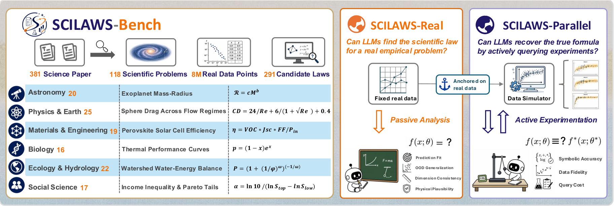
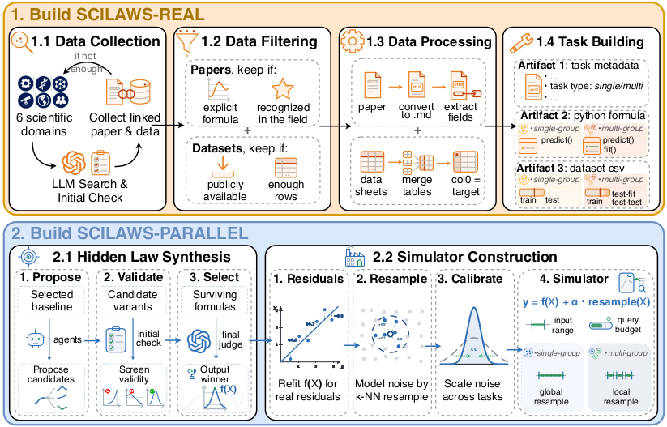
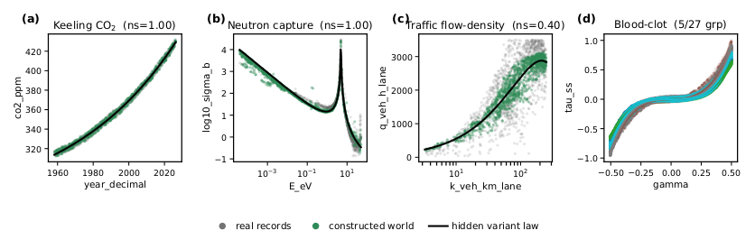
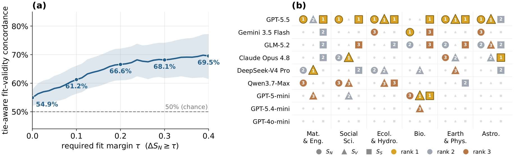
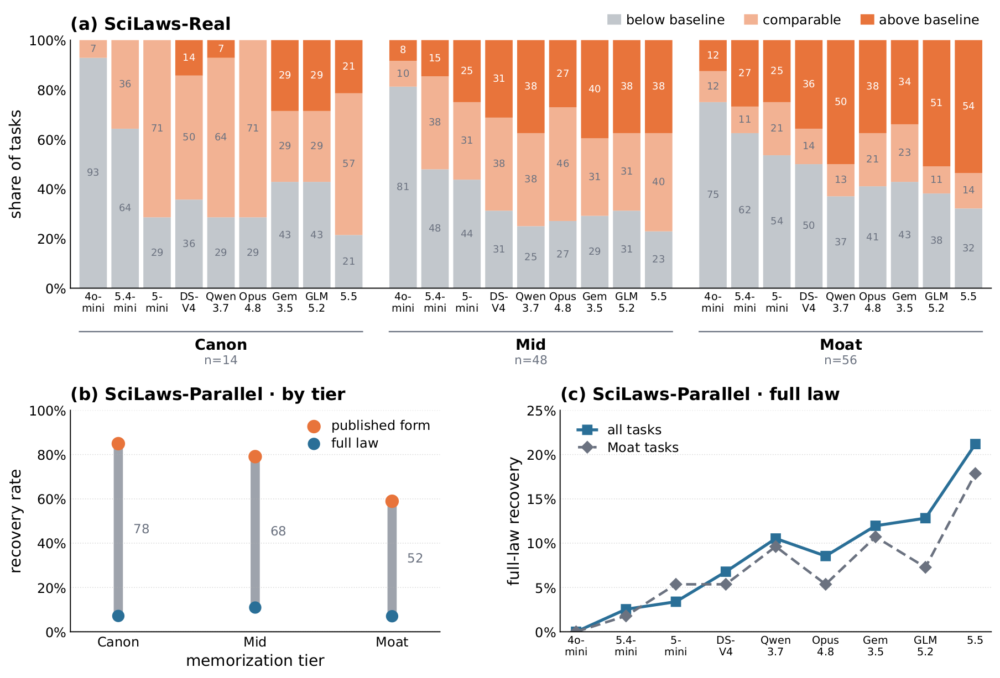
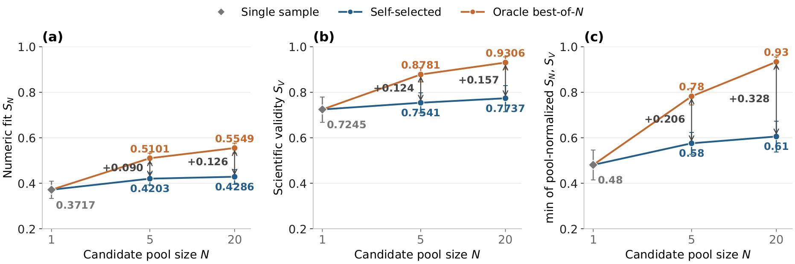

Can LLMs Discover Scientific Laws in Real and Parallel Worlds?
We took 118 open problems out of 381 scientific papers — the kind a research community is still arguing about — and asked frontier models to find the law twice: once from the measurements science already has, and once inside a world whose law has never been written down.

Abstract
Scientific equation discovery has long been central to scientific progress, proceeding through iterative cycles of hypothesis generation, observational testing, and refinement under scientific constraints. As LLM capabilities advance and their role in AI for Science expands, it remains an open problem whether they can genuinely discover scientific laws — and how that ability should be evaluated. Existing evaluations either simplify discovery through synthetic settings or reuse published targets that may already be familiar to the models.
We introduce SciLaws-Bench, a benchmark for scientific law discovery built from published research and real scientific data: 118 problems drawn from 381 papers, covering 291 candidate laws and roughly 8M real data points across six disciplines. Each problem is instantiated in two complementary settings. SciLaws-Real asks models to propose laws from fixed real observations, evaluating held-out predictive fit and scientific validity derived from the source literature. SciLaws-Parallel asks models to actively query residual-calibrated worlds and recover synthesized hidden laws derived from published forms.
We find that predictive fit can diverge from scientific validity, that memorization shapes whether models reproduce or move beyond published formulas, and that a best-of-N study reveals a selection bottleneck.
The corpus
Mined from active, data-driven literature — not textbooks — with human verification of every eligibility decision that matters.
A problem is admitted only when three things hold at once: the paper states an established closed-form law with enough validity constraints to check it; the dataset is public and large enough to evaluate on; and, jointly, the target does not leak into the inputs while at least one published formula beats a naive baseline. That last clause is what keeps the benchmark honest — every task has a real law that really works, and a real gap left to close.
66 problems are single-group: one global law, one parameter set. 52 are multi-group: related groups share a functional form while a few parameter values differ, so a model must find a law that transfers rather than fit each group on its own. No prior benchmark covers that setting.

Two settings
Both inherit the same scientific context, admissible ranges, validity constraints, and group structure. What differs is where the evidence comes from — and whether a ground truth exists at all.
SciLaws-Real
fixed recordsThe measurements have already been collected. A model reads the scientific context and the training records and proposes a closed-form law. Published formulas act as reference baselines, not as recovery targets — a model is free, and rewarded, for going past them.
- S_N — numeric fitReference-relative on held-out data: the strongest published formula scores 0.5, a perfect predictor 1.0. Splits test interpolation, input-range extrapolation, temporal transfer, cross-condition generalization, or entirely held-out groups.
- S_V — scientific validityA code-enabled judge executes each item of a frozen, source-grounded rubric, behind a global anti-hacking gate that rejects lookup tables and runaway free parameters.
S_V(t) = a_t · M_t / N_t
SciLaws-Parallel
active queriesThe same problem, rebuilt as a world you can run experiments in. Its generating mechanism is a newly synthesized structural variant of the published formula — data-consistent, physically screened, and absent from the literature. The model starts with no observations at all.
- S_S — structure recoveryFive levels: 0 unrelated · 0.25 right variables or trends · 0.5 the published base form · 0.75 base plus most added terms · 1.0 the complete hidden structure.
- Residual calibrationParameters fitted on the real records, residuals debiased and resampled by k-NN bootstrap so the empirical scatter survives, noise scaled to keep the law identifiable inside the query budget.
y = f(X) + α · resample(X)

Results
Nine frontier models, one fixed harness: a ReAct-style agent with a Python sandbox, up to 30 turns, and a fixed experimentation budget in the Parallel setting. Only the base model varies.
SV, SS and the memorization verdict are LLM-judged. Against majority labels from five domain experts, the judges reach Cohen's κ = 0.82, 0.84 and 0.77 — all inside the corresponding human–human ranges.
Findings
A better fit is not a better law
Across 3,616 within-task model pairs with unequal fit, numeric fit and scientific validity agree only 54.9% of the time — and reach 69.5% only once the fit margin exceeds ΔSN ≥ 0.4. On a nuclear-physics task the best-fitting submission introduces a resonance peak that does not exist. On the proton form-factor task the failure runs the other way: all nine models submit physically valid forms, and seven still lose to the published reference.

Memory hands back the published form, never the new terms
A cold-recall audit sorts the tasks into Canon, Mid and Moat. Only 11.9% of problems are recalled by all nine models; 47.5% by none. On Real, models beat the published baseline more often precisely where they cannot recall it — GPT-5.5 goes from 21% to 54% between Canon and Moat. On Parallel, recall lifts recovery of the published base form from 0.59 to 0.85, yet recovery of the complete hidden law stays flat near 0.08 at every tier, moving only with capability: 0% for GPT-4o-mini, 21% for GPT-5.5.

Models write better laws than they can pick
Draw 20 candidates per task, then let the same model run a knockout tournament over them. From N=5 to N=20 the oracle gains 4.5 points of fit and 5.3 points of validity; self-selection captures under 2 points of either. Inside the five-candidate groups the selector actually sees, 60% of its winners are Pareto-dominated by a sibling candidate — beaten on one metric and no worse on the other. The bottleneck is not generation.

Citation
@article{huang2026scilaws,
title = {Can LLMs Discover Scientific Laws in Real and Parallel Worlds?},
author = {Huang, Yiming and Liu, Ziche and Wu, Zhuohang and Wang, Yiqian and
Cui, Junxia and Zou, Xinkai and Mao, Linjun and Huang, Nan and
Yu, Naicheng and Zhu, Kaijie and Ma, Yue and Zhou, Kun and
Peng, Letian and Shang, Jingbo},
journal = {arXiv preprint},
year = {2026}
}